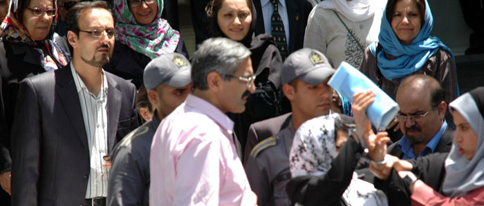
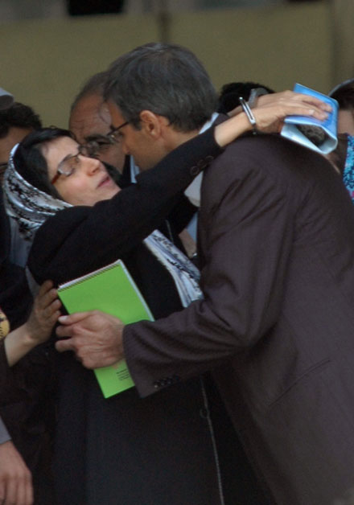
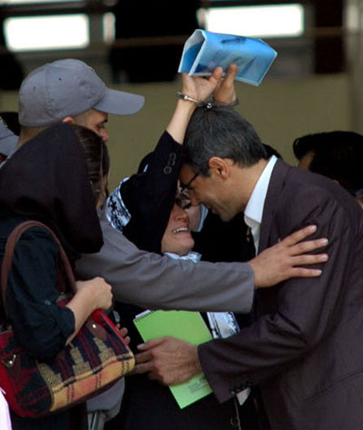
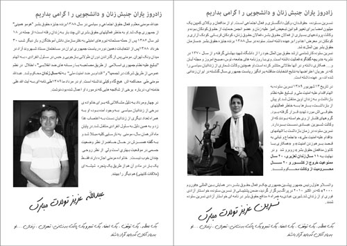
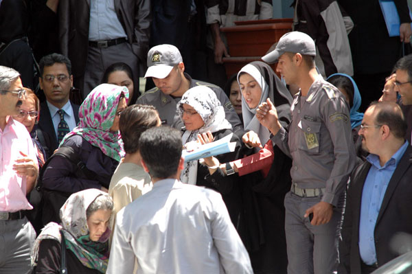

پذيرش > تریبون > گزارش كمپين > دیدار با نسرین ستوده: دست های شاهدی که هرگز پایین نمی آیند


 دیدار با نسرین ستوده: دست های شاهدی که هرگز پایین نمی آیند دیدار با نسرین ستوده: دست های شاهدی که هرگز پایین نمی آیند
8 خرداد 1390 - - نسخه قابل چاپ

تغییر برای برابری – ناهید جعفری
ساعت 11 صبح امروز قرار است نسرین ستوده را به ساختمان کانون وکلا در خیابان آرژانتین بیاورند. همه ما جمع می شویم. به تدریج بر تعداد فعالان جنبش زنان و وکلا افزوده می شود. همه ما در راهروی پایین کانون وکلا منتظر می مانیم. رضا خندان از طبقه بالای ساختمان پایین می آید. با نگاه او را دنیال می کنیم. خبر می دهد: نسرین را کمی زودتر از ساعت 11 آورده اند.

شوق دیدار نسرین پرمی کشد. ابتدا چند نفر از ما به همراه آقای خندان به یکی از اتاق ها می رویم . جایی که نسرین، یک مامور زن و چندتن از وکلا آنجا هستند. می خواهیم حساسیت ایجاد نکنیم تا لااقل موفق به دیدار نسرین شویم. سایرین یک یه یک می آیند و در اتاق جمع می شوند.

ما از دیدن نسرین و نسرین از دیدار ما، همه ذوق زده شده ایم. نسرین را در آغوش می کشیم. بغض هاست که می ترکد. معلوم نیست از شوق دیدار است یا دلتنگی 9 ماهه یا پایداری چهره ای که از او بسیار آموخته ایم. اشک ها روان است.

زمان پرواز می کند. سربازها همه ی ما را بیرون می کنند و اجازه ایستادن نمی دهند. بسیاری از وکلا به ویژه وکلای جوان گرد آمده اند. یکی از آنها به سرباز می گوید :« شما حق ندارید با ما برخورد بدی کنید. اینجا کانون وکلاست نباید برخورد خصمانه داشته باشید.»

آرام می شویم. از درون راهرو از پشت شیشه ها نسرین را می بینیم . او هم دست تکان می دهد. شاید یکی از دلایل شادمانی نسرین حضور دوباره اش در جمع وکلای همکارش است. این را می توانیم از نگاه و رفتارش دریابیم. شادمان است و همین ما را شادمان می کند، حتی شادی را می شود در چشمان رضا خندان دید. حالا فضای رسمی کانون به فضایی صمیمانه تبدیل شده است. یکی از وکلای جوان حاضر به نقل از پدرش که از وکلای باسابقه کانون وکلا است می گوید :« پدرم گفته اگر کانون وکلا پروانه وکالت نسرین ستوده را لغو کند اعلام می کنم که دیگر کار با کانون کار نمی کنم.» دلم می خواهد نسرین صدای او را بشنود وبداند که چه بزرگ است.

مراجع قضايي پیش تر خواستار تعليق پروانه وكالت نسرین شده بودند اما كانون وکلای دادگستری برای دفاع از حقوق صنفی وکلایش مسئوليت رسيدگي به اين پرونده را برعهده گرفته اند. و امروز اولين دادگاه رسيدگي به پرونده ابطال پروانه ي وكالت نسرين ستوده است که به ریاست خانم کیهانی از اعضای هیئت رئیسه کانون و چندتن از وکلا برگزار می شود.

. بیرون در ایستاده ایم و در انتظار نتیجه . انتظار با خارج شدن یکی از وکلا به سر می رسد. او در برابر پرسش یکی از فعالان جنبش زنان می گوید: «قرار شد دادگاه تجديد نظر در زماني ديگر برگزارشود. »

و ما دوباره شاد می شویم و پرانرژی. همینطور که پشت شیشه ایستاده ایم بروشوری را که فعالان حقوق زن برای تولد نسرین ستوده و عبدالله مومنی تهیه کرده اند در میان وکلا پخش می کنیم . یک بیوگرافی کوتاه با تصاویری از دو فعال برجسته جنبش دانشجویی و زنان. و تبریگ روز تولد آن دو:« زاد روز یاران جنبش زنان را گرامی بداریم.»
گوشه برگه ها نیز نوشته شده : «یک لحظه ، یک توقف، یک امضا، یک تمبر و یک پاکت به نشانی تهران، زندان اوین ...به یاد آنان که بابد آزاد باشند.»

نیم ساعت گذشته از ظهر، دو سرباز همراه نسرین به همراه مامور زن نسرین را از اتاق بیرون می آورند. نسرین درحالی که هردو دست های دستبند زده اش را بالای سرگرفته است، تمام راه را تا کنار ماشین همچنان می رود. مامور زن سعی می کند دست های نسرین را پایین بیاورد اما موفق نمی شود.

سر پله هایی که از ساختمان خارج می شویم که به طرف خیابان برویم رضا خندان با دو دستش دو طرف سر و صورت نسرین را گرفته و غرق بوسه می کند. مامور سعی دارد آنها را از هم جدا کند ولی نمی تواند. همه بهتمان زده است. مقاومت عشق است انگار یا بوسه های وعده داده ی رضا خندان به مادر ، مهراوه و نیما و ... .؟ یکی از فعالان حاضر می خواهد این لحظه را ثبت کند اما دوربینش را مامور می گیرد. دنبالش می دوم می گویم دوربین من است اما محلی نمی گذارد ...

ما امروز دوباره برمی کشیم ، افتخار می کنیم به نسرین و به خودمان به خاطر داشتن ایستاده ای چون او با دست هایی که هزگز پایین نمی آیند.
ارسال به
بالاترین
،
توییتر
،
فریندفید
،
فیسبوک
در همين بخش :
 دهمین دورۀ مراسم تندیس صدیقه دولت آبادی ۱۳۹۲ دهمین دورۀ مراسم تندیس صدیقه دولت آبادی ۱۳۹۲
کارت پستالهایی به بهانهی هشت مارس و به یاد همهی مبارزین راه برابری
بیانیه بیش از 350 تن از مدافعان حقوق زنان به مناسبت روز جهانی زن؛ زنان هر روز فرودستتر میشوند
لباسی که برای تن ما دوخته اند! /اعظم بهرامی
چالشها و چشمانداز فعالیت مدنی زنان
ديگر بخش ها :
طرح یک میلیون امضا
|
مقالات
|
سایت نوشته ها
|
اخبار
|
گزارش كمپين
|
گفت و گو
|
علیه سکوت
|
كوچه به كوچه
|
نامه های شما
|
گزارش ویژه
|
گفتگو با اعضا
|
ویژه سالگرد کمپین
|
تصویر برابری
|
دل آرام علی
|
تریبون
|
مقالات
|
تاریخ شفاهی
|
خارج از چارچوب
|
کتابخانه
|
درباره کمپین
|
کمپین در شهرها
|
کمپین در بند
|
صدای تغییر
|
ویژه 22 خرداد
|
لایحه حمایت از خانواده
|
گالری
|
عشا مومنی
|
امیر یعقوبعلی
|
خدیجه مقدم
|
راحله عسگری زاده و نسیم خسروی
|
پروین اردلان،جلوه جواهری، مریم حسین خواه، ناهید کشاورز
|
زینب پیغمبرزاده
|
سعیده امین، سارا ایمانیان، محبوبه حسین زاده، ناهید کشاورز و همایون نامی
|
احترام شادفر
|
نسیم سرابندی زاده،فاطمه دهدشتی
|
وبلاگ مهمان
|
پرونده خرم آباد
|
دستگیری ها
|
مریم مالک
|
پرستو اللهیاری
|
مهرنوش اعتمادی
|
سمیه رشیدی
|
Other Languages
|
همراهان
|
«فراخوان کمپین ده روز با بهاره هدایت»
| English
|